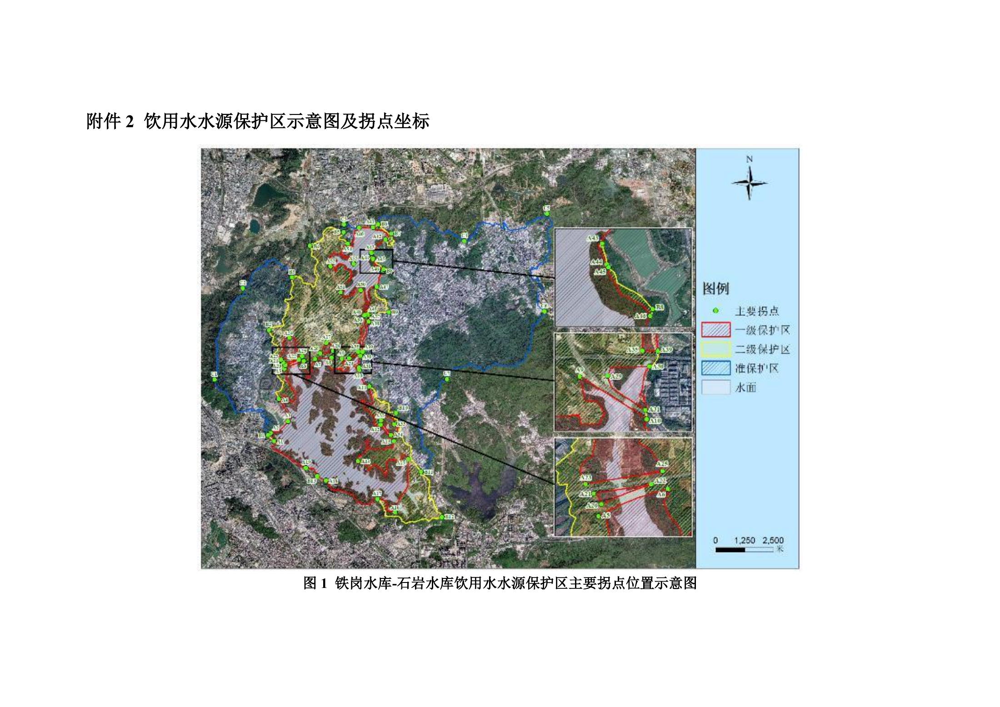

石岩水库附近：矶竿练手与较大鱼
主库、河口河道与经营鱼塘各自判断。先核下竿条件，再按深圳出发专题比较交通、练习内容和鱼体证据。
目前没有确认可以直接去的矶竿钓位。主库一级内禁钓；众乐是练手询问首选，新宝石和湖尔美是较大鱼询问线索。公开规则明确排除矶竿的钓场不纳入你的出行候选。
练手与较大鱼先问哪家
练手先问SY03众乐综合塘的非取鱼模式；较大个体先问SY04新宝石黑鲩塘、SY05湖尔美大物塘。都须先确认正在营业和允许矶竿，才进入出行选择。
附近也要分用途
SY07玉律明确禁矶竿、SY08客天下限定手竿，按你的装备排除。SY06喜渔人先问竿长与带轮规则；SY09、SY10有停业线索，不安排专程。
按片区与用途选要核实的地点
表中的“询问”表示值得先确认的线索。鱼塘页面规则、收费及存鱼宣传都没有经营方的当日确认。
没有匹配地点，请减少筛选条件。
| 地点 | 当前判断 | 矶竿条件 | 练手／较大鱼 |
|---|---|---|---|
| SY01 石岩水库主库区与连通渠库区／入库河道 | 一级保护区内禁钓 | 矶竿、手竿均不能绕开一级保护区禁钓。 | 排除。钓后放流或只练漂，都不改变一级保护区禁钓要求。 较大鱼：排除。没有可据以安排合法垂钓的库区大鱼记录。 |
| SY02 石岩大桥／石岩湖水闸附近河道库区／入库河道 | 先核水面身份与管理边界 | 未查到矶竿许可、竿长或抛投范围。 | 有免费河道实钓线索，但边界、平整站位与水流未核清，暂不列可直接去练手的地点。 较大鱼：不作大鱼专程；点评主要是小罗非及偶见其他淡水鱼。 |
| SY03 众乐钓鱼场 · 综合塘料坑／洲石路方向 | 练手：优先询问，不是已确认钓位 | 80元综合塘模式限竿5.4米、齐竿线；鲫鱼塘限定3.9米手竿。50元模式是否同样限竿线、允许矶竿并不明确。 | 页面有不带鱼、不回鱼的非取鱼收费模式，与你的休闲目的较接近。先确认该模式仍有、可用带轮矶竿、可现场摘钩放流。 较大鱼：页面另有黑皖塘，但不作为轻松练手依据。 |
| SY04 新宝石钓鱼场 · 综合塘／黑鲩塘宝石路／塘头方向 | 较大鱼：先问黑鲩塘与竿轮规则 | 黑鲩塘限竿6.3米，页面另列总长13米，长度口径及绕线轮使用需核对；不能把“限竿”直接视为矶竿许可。 | 不作轻松上鱼练手首选；综合塘价格与多次空军自述需要一起考虑。 较大鱼：黑鲩塘规则涉及15斤以上鱼的回塘，证明经营规则针对大个体，不证明当下存量或你能钓到。 |
| SY05 湖尔美农庄钓鱼场 · 大物塘料坑／洲石路方向 | 较大鱼：广告体型明确，成功率不明 | 页面称不限竿线长度，同时要求固定钓位、垂直抛投；是否允许带轮矶竿仍须明确询问。 | 大物塘规则和落鱼负担较多，不列日常轻松练手首选。 较大鱼：大物塘介绍列黑皖8—50斤、脆肉鲩10—20斤；这是经营宣传范围，没有匹配到可靠称重渔获。 |
| SY06 喜渔人休闲钓鱼场玉律／红坳／任达山庄方向 | 竿型待确认，练手询问后置 | 页面限竿4.5米并禁路亚、海竿；没有明确列矶竿。你的竿长未给出，不能判定可用。 | 有正面休闲评价，但短竿限制与禁海竿规则可能不适合你的矶竿。 较大鱼：未找到具体较大个体体重记录，不作大鱼行程。 |
| SY07 阿婆山玉律钓鱼场玉律／红坳／任达山庄方向 | 按公开规则排除：明禁矶竿 | 公开规则明确禁止矶竿、海竿等钓具。除非经营方提供已生效的不同规则，按排除处理。 | 当前公开规则明确禁矶竿，不适合你带现有装备去练手。 较大鱼：即使规则包含大黑皖，也不满足你的竿型要求。 |
| SY08 客天下钓场宝石路／塘头方向 | 按公开规则排除：仅限手竿 | 公开规则限定使用手竿；配绕线轮的矶竿不能据此视为获准。 | 手竿塘且收费较高，不列你的矶竿练手点。 较大鱼：虽有大鲢鳙经营介绍，竿型限制仍使其不适合你的当前装备。 |
| SY09 长城绿享钓场水田方向 | 有停业线索，行程后置 | 旧页面不限制竿长，仍未证明目前允许带轮矶竿。 | 暂停安排。页面无限竿规则不能覆盖经营状态疑问。 较大鱼：没有可据以安排现行大鱼行程的记录。 |
| SY10 红坳果园钓鱼场玉律／红坳／任达山庄方向 | 有带日期的停业线索，行程后置 | 矶竿规则未取得。 | 暂停安排。位置靠近光明，仍需先确认是否重新营业。 较大鱼：没有当前塘种、存鱼与体型证据。 |
先分清水库、生态库与独立鱼塘
2025年11月10日公布生效的方案，将石岩水库正常水位线36.73米以下主库水面及铁岗—石岩连通渠列为一级水源保护区，相关生态库、道路等例外以方案为准。主库一级内禁钓。石岩河口生态库、应人石河口生态库被列为例外，不等于已经开放垂钓；河道和鱼塘须逐段匹配保护界线及现场管理。方案含道路、物理隔离区等细节，不能画一个200米圆圈替代法定边界。
深圳市政府：饮用水水源保护区调整（含生效）公告 · 生态环境部：生态环境法典 · 深圳市饮用水源保护条例 · 深圳新闻网：石岩水库一级水源保护区垂钓查处

SY01 石岩水库主库区与连通渠
一级保护区内禁钓
- 位置证据
- 石岩水库正常水位线以下主库水面、铁岗—石岩连通渠；生态库等例外按官方图界区分。
- 练手
- 排除。钓后放流或只练漂，都不改变一级保护区禁钓要求。
- 较大鱼
- 排除。没有可据以安排合法垂钓的库区大鱼记录。
- 矶竿
- 矶竿、手竿均不能绕开一级保护区禁钓。
- 费用
- 不适用
- 鱼体依据
- 2022年查处记录仅见一条罗非；不用于推算鱼群、尺寸或咬口。
- 钓友自述
- 网络绿道游玩内容里有人询问能否钓鱼；提问没有许可证明。未取得可定位且合法的近期库区实钓帖。
- 人流钓压
- 绿道游人数量与钓压不同；不评价禁钓水面是否冷门。
- 交通入口
- 可把公共绿道作为看水面、辨识界标的步行行程；不把绿道可到达当下竿依据。
- 先核对
- 主库排除后，只对官方列出的生态库和河道逐段核界。
深圳市政府：饮用水水源保护区调整（含生效）公告 · 生态环境部：生态环境法典 · 深圳新闻网：石岩水库一级水源保护区垂钓查处 · 深圳市生态环境局：2026年3月集中式饮用水源水质
SY02 石岩大桥／石岩湖水闸附近河道
先核水面身份与管理边界
- 位置证据
- 平台以桥和水闸作地点范围；具体桥下站位、所在水面与河口生态库没有精确匹配。
- 练手
- 有免费河道实钓线索，但边界、平整站位与水流未核清，暂不列可直接去练手的地点。
- 较大鱼
- 不作大鱼专程；点评主要是小罗非及偶见其他淡水鱼。
- 矶竿
- 未查到矶竿许可、竿长或抛投范围。
- 费用
- 平台标免费；不代表开放许可。
- 鱼体依据
- 钓友“空钩钓地球”报告小罗非为主，偶有土鳞、鲫、鲤；没有体重。“土鳞”保留帖子俗称，未确认物种。
- 钓友自述
- 另一位钓友询问是否走水，公开可读回复没有给出答案。两条点评均无可用绝对日期。
- 人流钓压
- 没有可靠人流或钓压记录。桥下阴影也不证明少人。
- 交通入口
- 先拿到桥名、步行入口和站位照片，再查公交接驳；不导航到水闸设施内。
- 先核对
- 确认是否为主库、河口生态库或独立河段；核界标、设施管理范围和允许下竿的具体岸段。
SY03 众乐钓鱼场 · 综合塘
练手：优先询问，不是已确认钓位
- 位置证据
- 石岩料坑民生四路南，按平台地点描述；需经营方发当前入口定位。
- 练手
- 页面有不带鱼、不回鱼的非取鱼收费模式，与你的休闲目的较接近。先确认该模式仍有、可用带轮矶竿、可现场摘钩放流。
- 较大鱼
- 页面另有黑皖塘，但不作为轻松练手依据。
- 矶竿
- 80元综合塘模式限竿5.4米、齐竿线；鲫鱼塘限定3.9米手竿。50元模式是否同样限竿线、允许矶竿并不明确。
- 费用
- 页面50元／竿非取鱼模式；自述2024-06-10的点评报130元／4小时并空军。价目互不一致，只作询价线索。
- 鱼体依据
- 综合塘列鲤、草；未找到可定位的较大个体称重记录。
- 钓友自述
- “yuiviber”自述2024-06-10空军并称增氧机使漂线难控制；“黑炭炭钓鱼佬”也报空军、轻口。
- 人流钓压
- “老吴呜呜呜”称清晨要抢位，日期不明；热门标签不能保证有口。
- 交通入口
- 页面列停车位；光明出发可比较料坑方向自驾。公交末段、停车实际位置和竿包步行距离尚未核实。
- 先核对
- 先发竿型、竿长和是否用绕线轮；问非取鱼模式、允许钓组、放流流程、当天入口与停车。
SY04 新宝石钓鱼场 · 综合塘／黑鲩塘
较大鱼：先问黑鲩塘与竿轮规则
- 位置证据
- 平台描述宝安区宝石路旁；尚未确定入口及哪口塘对应规则。
- 练手
- 不作轻松上鱼练手首选；综合塘价格与多次空军自述需要一起考虑。
- 较大鱼
- 黑鲩塘规则涉及15斤以上鱼的回塘，证明经营规则针对大个体，不证明当下存量或你能钓到。
- 矶竿
- 黑鲩塘限竿6.3米，页面另列总长13米，长度口径及绕线轮使用需核对；不能把“限竿”直接视为矶竿许可。
- 费用
- 页面综合塘100元／4小时；黑鲩塘150或168元／4小时，均未确认当前有效。
- 鱼体依据
- 综合塘列多种淡水鱼；较大黑鲩的规则体重未对应到钓友实际称重。
- 钓友自述
- “wtho2012”报告三次出钓，两次空军，一次六条罗非；点评没有绝对日期、个体重量。
- 人流钓压
- 未找到稳定拥挤或冷门证据。页面提示停车勿挡通道。
- 交通入口
- 宝石路方向先问当前大门；可比较6号线到石岩后接驳与自驾，未核实最近车站或末段时间。
- 先核对
- 问当天是否开黑鲩塘、矶竿与泄力轮是否准用、鱼体与竿号适配、抄鱼协助及不取鱼收费。
SY05 湖尔美农庄钓鱼场 · 大物塘
较大鱼：广告体型明确，成功率不明
- 位置证据
- 平台描述洲石路宝山园西北500米；仍需当前入口定位。
- 练手
- 大物塘规则和落鱼负担较多，不列日常轻松练手首选。
- 较大鱼
- 大物塘介绍列黑皖8—50斤、脆肉鲩10—20斤；这是经营宣传范围，没有匹配到可靠称重渔获。
- 矶竿
- 页面称不限竿线长度，同时要求固定钓位、垂直抛投；是否允许带轮矶竿仍须明确询问。
- 费用
- 页面大物塘200元／4小时；未确认现价与放流结算。
- 鱼体依据
- 按塘种区分黑皖与脆肉鲩；不用大头塘规则套大物塘。
- 钓友自述
- “1包老坛钓天下”自报两次均空军；“消失de背影”也称空军。日期不明，不换算成全场成功率。
- 人流钓压
- 没有可靠拥挤记录。固定伞位规则会限制换位与回摆。
- 交通入口
- 洲石路方向宜先问停车和钓位距离；平台“交通便利”没有公交或步行验证。
- 先核对
- 特别问抄鱼：页面说没有工作人员协助抄鱼。确认放流处理、大鱼回塘、绕线轮和竿号后再定行程。
SY06 喜渔人休闲钓鱼场
竿型待确认，练手询问后置
- 位置证据
- 平台描述任达山庄门口往石岩方向约100米草莓基地附近；入口未实走。
- 练手
- 有正面休闲评价，但短竿限制与禁海竿规则可能不适合你的矶竿。
- 较大鱼
- 未找到具体较大个体体重记录，不作大鱼行程。
- 矶竿
- 页面限竿4.5米并禁路亚、海竿；没有明确列矶竿。你的竿长未给出，不能判定可用。
- 费用
- 一位点评提130元／6小时；无绝对日期，不作现价。
- 鱼体依据
- 公开点评有咬口体验，没有可核实的体型证据。
- 钓友自述
- “黑炭炭钓鱼佬”评价口尚可；“钓鱼的人王者荣耀”报告夜场空军；“andyniu”肯定休息条件。均无绝对日期。
- 人流钓压
- 休息设施好不等于低钓压；人流未核实。
- 交通入口
- 先确认山庄侧实际开放道路、车辆入口和末段公交，不使用旧门口描述直接规划夜间行程。
- 先核对
- 首先问4.5米限制是否适用于所有塘，以及矶竿是否被纳入禁用海竿。
SY07 阿婆山玉律钓鱼场
按公开规则排除：明禁矶竿
- 位置证据
- 玉律片区阿婆山，平台仍使用旧行政区名；不把旧区名作当前导航。
- 练手
- 当前公开规则明确禁矶竿，不适合你带现有装备去练手。
- 较大鱼
- 即使规则包含大黑皖，也不满足你的竿型要求。
- 矶竿
- 公开规则明确禁止矶竿、海竿等钓具。除非经营方提供已生效的不同规则，按排除处理。
- 费用
- 本用途排除，不据页面价格安排出钓。
- 鱼体依据
- 鱼塘有多种鱼的介绍；体型宣传不能抵消竿型限制。
- 钓友自述
- “深受打击你看手机”报告首次找入口走错路、车辆受困；“旺财不是狗”报夜场空军。均无绝对日期。
- 人流钓压
- “我是壹号男嘉宾”称长手竿较多；不是你的矶竿可用证明。
- 交通入口
- 即使在光明附近也不优先去；若改用手竿，仍先问正式入口，避免沿不明小路开车。
- 先核对
- 有明确、可复核的矶竿规则变更才重新考虑；不靠到场碰运气。
SY08 客天下钓场
按公开规则排除：仅限手竿
- 位置证据
- 平台描述石岩塘头社区宝石路成美园艺旁；当前入口未确认。
- 练手
- 手竿塘且收费较高，不列你的矶竿练手点。
- 较大鱼
- 虽有大鲢鳙经营介绍，竿型限制仍使其不适合你的当前装备。
- 矶竿
- 公开规则限定使用手竿；配绕线轮的矶竿不能据此视为获准。
- 费用
- 页面360元／4小时；仅用于解释行程负担，不是现时报价。
- 鱼体依据
- 经营介绍针对鲢鳙，不能把宣传体型算钓友实测。
- 钓友自述
- “黑炭炭钓鱼佬”自报四小时四条鲢鳙并提到导钓帮助；无单鱼重量。“那年花未开”抱怨规则较多。日期不明。
- 人流钓压
- 未查到可核实的人流与钓压。
- 交通入口
- 宝石路片区可与新宝石一起询问，但不要因靠近就默认能换塘练矶竿。
- 先核对
- 只在决定改用手竿时再核实营业、塘规与成本。
SY09 长城绿享钓场
有停业线索，行程后置
- 位置证据
- 平台描述水田长城电脑工业区内、天下鹅庄旁。
- 练手
- 暂停安排。页面无限竿规则不能覆盖经营状态疑问。
- 较大鱼
- 没有可据以安排现行大鱼行程的记录。
- 矶竿
- 旧页面不限制竿长，仍未证明目前允许带轮矶竿。
- 费用
- 未确认营业，不以页面价目安排行程。
- 鱼体依据
- 旧点评有大头鱼体验，不提供当前存鱼或体型依据。
- 钓友自述
- “浪费一整天”称已停业、场地被收；“越野666”也提征收。页面相对时间无法可靠换算成日期，恢复营业未核实。
- 人流钓压
- 不能从旧点评判断当前热门或冷门。
- 交通入口
- 先取得经营方当前开门、入口及钓位照片；未核实前不安排公交或自驾专程。
- 先核对
- 只接受明确的恢复营业信息再重排；地图名称仍在不等于开放。
SY10 红坳果园钓鱼场
有带日期的停业线索，行程后置
- 位置证据
- 高德条目列石岩三祝里社区附近；未将POI点当钓位。
- 练手
- 暂停安排。位置靠近光明，仍需先确认是否重新营业。
- 较大鱼
- 没有当前塘种、存鱼与体型证据。
- 矶竿
- 矶竿规则未取得。
- 费用
- 当前收费未知。
- 鱼体依据
- 未取得当前经营鱼种，不能凭果园／鱼塘名称推断。
- 钓友自述
- 高德用户于2023-09-18评价场地已倒闭。这里只记录明确日期与停业线索，不宣称2026年仍然关闭。
- 人流钓压
- 未知；地图列表继续收录不能表示人气或开放。
- 交通入口
- 先核实当前场地经营者与入口；不把自动地图榜单作为自驾目的地确认。
- 先核对
- 确认恢复营业、矶竿规则及放流模式后再考虑。
行程与钓法
公共交通怎么考虑
光明可比较6／13号线到上屋、石岩；南山可沿13号线接近。宝安、龙华、福田的换乘比选见深圳出发专题。钓场多在外围，站到入口的公交、步行、营业后返程均未验证。获得经营方定位后再比较路线，不能把“地铁到石岩”写成“地铁直达鱼塘”。
自驾怎么避免跑空
料坑／洲石路、宝石路／塘头、玉律／红坳、水田分别看作片区询问线索。先拿到当天入口定位、停车点和最后步行距离；旧点评已有走错小路与停业案例，不估算门到门分钟数。
什么时候练最有价值
先挑白天、站位空闲且能完整回收钓组的时段，练落点、风线、送线、控漂与泄力。鱼塘看当天放鱼、增氧机、气温、水温和邻位咬口；淡水不套海边潮汐表。按塘规选钓组和饵，不以晨昏或放鱼后必有口作保证。
较大鱼需要什么证据
区分经营宣传体重、塘规中的回塘门槛、钓友称重渔获。这里没有查到能匹配具体钓位的近期较大鱼称重记录。先按你的竿长、号数、线组、泄力及抄鱼条件判断是否合适，不能从“矶竿”二字推定能应对数十斤鱼。
深圳地铁：石岩上屋站片区公告 · 深圳地铁：6号线无障碍设施与换乘
可直接复制给经营方的核对内容
当天是否营业，具体哪口塘开放？我的矶竿为×米／×号、配绕线轮，是否准用？浮漂单钩可不可以，竿线总长怎么算？只练习、不带鱼、不回鱼现金是否有独立收费？鱼能否逐条摘钩放回，还是要统一结算？是否限制投放窝料、换位、抛投方向？请发当前入口、停车点和钓位照片；大鱼有没有工作人员帮助抄鱼？
来源与核查限度
本报告核查原地点页面、公开规则与可读钓友点评，未电话确认营业和塘规，未实走入口、测水深、核实公交末段，也未将鱼塘坐标叠到法定边界。抖音同名“众乐海钓场”检索到坦洲场地，不作为石岩众乐证据；没有取得可定位、带日期且可读的小红书本地实钓记录。评论中的水色、死鱼和无口感受不作为水质检测或经营违规结论。
查看来源、时间与实际读取范围
- 深圳市政府：饮用水水源保护区调整（含生效）公告（2025-11-10）
公告正文及两个PDF附件；保护区表第1页、附图第1页及对应坐标表。 当前公布边界；不能用道路名称或附近钓场名称替代边界匹配。
- 生态环境部：生态环境法典（2026-03-12通过，2026-08-15施行）
第三百一十九、三百二十条及第一千二百四十二条。 一级水源保护区禁止垂钓；二级条文不能等同于每个岸段已经获准使用。
- 深圳市饮用水源保护条例（2018-12-27修正；网页2019-01-25）
第十四、十五条。 二级内垂钓等活动须防止污染；另有场地管理规则时仍须核对。
- 深圳新闻网：石岩水库一级水源保护区垂钓查处（2022-07-18）
报道正文：2022年7月14日现场查处。 支持库区实际执法，不把报道中的泛化措辞扩大为全部周边水域禁钓。
- 深圳市生态环境局：2026年3月集中式饮用水源水质（监测月份2026-03）
石岩水库湖库型水源监测表。 确认仍作饮用水源；达标不代表允许垂钓，也不是食用鱼检测。
- 深圳地铁：石岩上屋站片区公告（2026-08-17）
上屋站与石岩片区位置、6号线及13号线换乘说明。 只支持到石岩城区的轨道接近，不提供任何鱼塘末段步行距离。
- 深圳地铁：6号线无障碍设施与换乘（未标发布日期；2026-10-11读取）
新湖附近站及石岩片区站点列表。 支持新湖到石岩的6号线接近思路，门到门时间未验证。
- 钓鱼之家：石岩大桥／石岩湖水闸（页面及多数点评未给绝对日期；2026-10-11读取）
原地点页面的介绍、垂钓规则及无需登录即可读取的点评；不是全部APP评论。 鱼塘介绍为经营信息，点评为钓友自述；当前营业、价格及规则未向经营方确认。免费标签不证明许可。
- 钓鱼之家：众乐钓鱼场（页面及多数点评未给绝对日期；2026-10-11读取）
原地点页面的介绍、垂钓规则及无需登录即可读取的点评；不是全部APP评论。 鱼塘介绍为经营信息，点评为钓友自述；当前营业、价格及规则未向经营方确认。免费标签不证明许可。
- 钓鱼之家：新宝石钓鱼场（页面及多数点评未给绝对日期；2026-10-11读取）
原地点页面的介绍、垂钓规则及无需登录即可读取的点评；不是全部APP评论。 鱼塘介绍为经营信息，点评为钓友自述；当前营业、价格及规则未向经营方确认。免费标签不证明许可。
- 钓鱼之家：湖尔美农庄钓鱼场（页面及多数点评未给绝对日期；2026-10-11读取）
原地点页面的介绍、垂钓规则及无需登录即可读取的点评；不是全部APP评论。 鱼塘介绍为经营信息，点评为钓友自述；当前营业、价格及规则未向经营方确认。免费标签不证明许可。
- 钓鱼之家：喜渔人休闲钓鱼场（页面及多数点评未给绝对日期；2026-10-11读取）
原地点页面的介绍、垂钓规则及无需登录即可读取的点评；不是全部APP评论。 鱼塘介绍为经营信息，点评为钓友自述；当前营业、价格及规则未向经营方确认。免费标签不证明许可。
- 钓鱼之家：阿婆山玉律钓鱼场（页面及多数点评未给绝对日期；2026-10-11读取）
原地点页面的介绍、垂钓规则及无需登录即可读取的点评；不是全部APP评论。 鱼塘介绍为经营信息，点评为钓友自述；当前营业、价格及规则未向经营方确认。免费标签不证明许可。
- 钓鱼之家：客天下钓场（页面及多数点评未给绝对日期；2026-10-11读取）
原地点页面的介绍、垂钓规则及无需登录即可读取的点评；不是全部APP评论。 鱼塘介绍为经营信息，点评为钓友自述；当前营业、价格及规则未向经营方确认。免费标签不证明许可。
- 钓鱼之家：长城绿享钓场（页面及多数点评未给绝对日期；2026-10-11读取）
原地点页面的介绍、垂钓规则及无需登录即可读取的点评；不是全部APP评论。 鱼塘介绍为经营信息，点评为钓友自述；当前营业、价格及规则未向经营方确认。免费标签不证明许可。
- 高德地图：红坳果园钓鱼场原用户评价（用户评价2023-09-18；2026-10-11读取）
原POI条目及带日期的停业评价。 只支持存在停业线索；地图仍显示名称不能证明恢复营业。